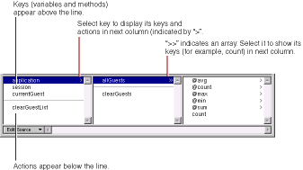
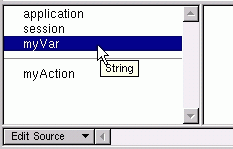
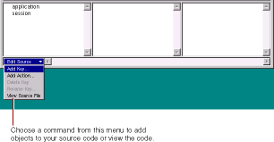

PATH
Documentation > WebObjects 4.5 >
Tools and Techniques
The Object Browser
The bottom part of the component window is the object browser
, which displays your application's variables and methods. This display provides a graphical method of binding objects in your code to dynamic elements in the component.

The first column of the object browser displays two types of objects:
-
Keys
are displayed above the horizontal line. A key can be either an instance variable or a method that returns a value.
-
Actions
are displayed below the line. An action (or action method) is a method that takes no parameters and returns a component (the next page to be displayed).
A ">" next to an object's name in the browser indicates that it contains additional keys and actions, which are displayed in the next column when you select it.
In the figure, for example, the application
object is selected, showing that there are keys and actions defined in the application code. One of these, allGuests
, is an array (indicated by the ">>"), and the array's count
method is displayed in the next column.
Note:
If you rest the mouse pointer on a key, WebObjects Builder displays its type.

When you create a new project, the only keys that appear in the object browser are application
and session
(unless you use the Wizard to create a database application). These are methods that allow you to access variables in your application and session code.

There are several ways to add items to the object browser:
-
Use Project Builder to add keys and actions to your component's source file.
When you save changes to a source file, WebObjects Builder parses the file, detects items that have been added and deleted, and updates the object browser's display to reflect the changes. The source code can be written in any of the languages that WebObjects supports (Java, Objective-C, or WebScript).
-
Use the menu at the bottom of the object browser to add items to your code directly from WebObjects Builder. See the next section,
Working with Keys in WebObjects Builder
, for more information.
-
Drag a model file
, an entity from Enterprise Objects Modeler, or a relationship from Enterprise Objects Modeler into the browser to create a display group
variable. See
Adding Display Groups
for more information.
© 1999 Apple Computer, Inc. – (Last Updated July 27 99)